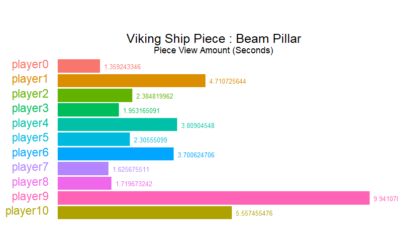
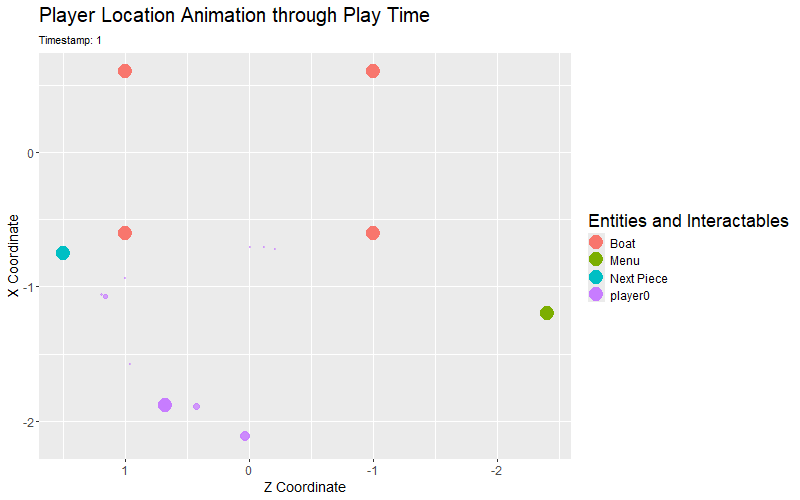

The GCIEL Viking Longship VR Experience project has a goal to find a new way to teach within the 21st century through VR. With that learning what works and what doesn't in the VR experience is important. The VR experience takes players through the building of a Viking longship. Each piece generated allowing the player to click to learn about the piece through poems of the pieceand audio about the piece. They then can place the piece to continue building a ship. The Viking Ship Assessment app allows for player experiences to be displayed through multiple visualizations looking at player position as well as video engagement, piece completion time, and piece viewing amounts.
The purpose of the ship piece view amount animation (above) is to find where players might start to lose interest in the pieces themselves. This can be seen by iterating through each piece and seeing the differences between each player in the data set is very useful to see how interest in viewing pieces might differ. Ultimately the animation is to see if there are piece models that need to be modified to increase player attention retention.
The main focus of the assessment project was to focus on the location of the player and to include the location of the interactable objects. Through the data of the head postion at each time stamp each player can be displayed within the animation. Currently the animation only allows for one player to be displayed along with the points of the objects.